註記
Flow與s-t Flow是兩個不同的概念。然而古代人當初定義問題時，卻將兩者都稱作Flow，從此之後便混淆不清了。
Cut與s-t Cut亦有類似情況。古代人當初沒有Cut的概念，將s-t Cut直接稱作Cut。不過自從有人發表Cut的演算法之後，眾人便開始注重用詞了。
以下章節，Flow譯作「流」或「循環流」，s-t Flow譯作「源匯流」。
Flow
從現在起，水流不再從源點流到匯點，水流改為不斷循環。
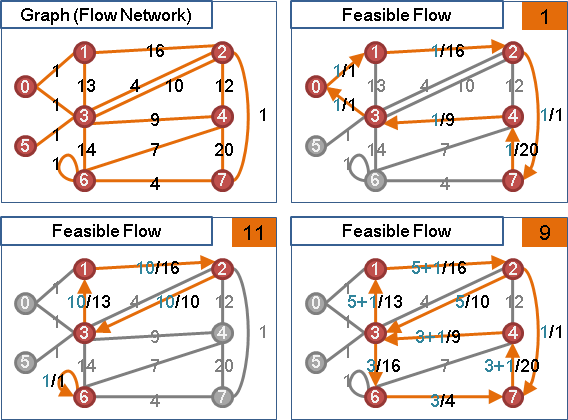
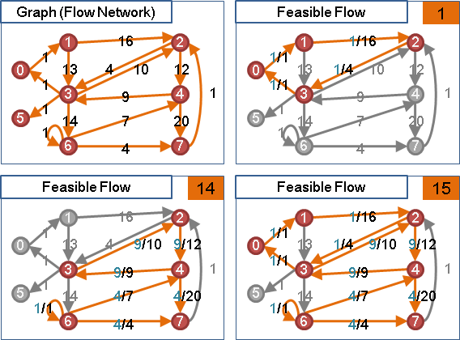
要計算總流量，可將水流分解成數個環，以環流量的總和作為總流量。每次挑一條有水流的邊開始尋找環，最多分解成E個環。
Supply / Demand
「供點」有水注入、「需點」有水洩出，彷彿源點與匯點。圖上可以有多個供點與需點，供水量總和必須等於需水量總和，才有機會形成可行流。
圖上每一點皆有供需水量：supply的供需水量為正值，該點流出多於流入；demand的供需水量為負值，該點流入多於流出；其他的點的供需水量為零，流入等於流出。
供需水量 = 流出水量 - 流入水量
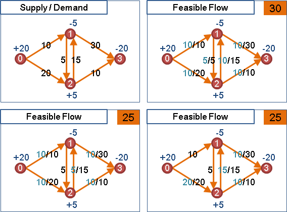
導入supply與demand之後，總流量的定義就不明確了。這裡姑且定義成：supply的總和，再加上不受supply與demand影響的循環流流量。
最大流最小割定理、可行流定理
導入水流流量：任意一個割，甲側流往乙側的水量總和，等於乙側流往甲側的水量總和。
導入容量上限：任意一個割，甲側流往乙側的水量總和，小於等於甲側到乙側的容量總和。最大流流量，小於等於任何一個「管線容量的最小s-t割」！
導入供需水量：任意一個割，甲側的供需水量總和，必須小於等於甲側到乙側的容量總和，才能形成可行流。
導入容量下限：任意一個割，甲側到乙側的容量下限總和，必須小於等於甲側到乙側的容量上限總和、也要小於等於乙側到甲側的容量上限總和，才能形成可行流。
容量下限變成零
有向邊的容量下限，得移轉至supply與demand。
預先流水，水量等於容量下限：
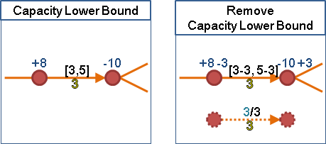
必須記錄每條邊的預流水量與耗費成本，以利之後還原。
容量上限變成無限大
其實沒有必要移除容量上限──最大流演算法皆支援容量上限。不過還是介紹一下吧。
移除容量下限後，可以進一步移除容量上限。容量上限添加至終點，然後回沖：
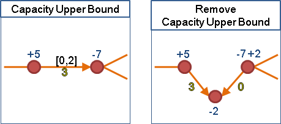
移除容量上限後，變成二分圖，得以設計更簡潔的資料結構與演算法。
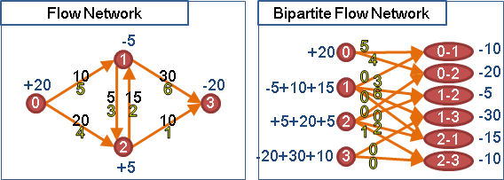
負成本變成正成本
運用溯洄沖減，可以把負成本變成正成本。
預先流水，水量等於容量上限：
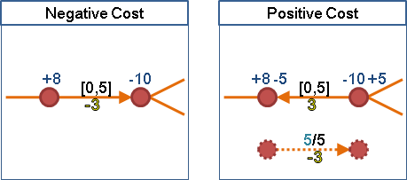
必須記錄每條邊的預流水量和耗費成本，以利之後還原。
無向邊變成有向邊
無向邊得同時雙向流動。一條無向邊可以改為兩條方向相反的有向邊，可是必須共用容量上下限。

成本非負、沒有容量下限：為了降低成本，來回水流可以變成單向水流。上述兩條方向相反的有向邊，大可不必共用容量上限，宛如普通的有向邊。
成本非負、擁有容量下限：預先在無向邊上來回流動，滿足容量下限。流量是容量下限的一半，可以是0.5。如果流量只能是整數，則可以類比為0/1 Knapsack Problem，屬於NP-complete問題。
成本為負：同上。流量是實數，就來回流動。流量是整數，NP-Complete。
歸約
Feasible s-t Flow -> Feasible Flow -> Maximum s-t Flow
導入成本，依然如此。
可行源匯流化作可行循環流。匯點到源點增加一條管線，容量上限無限大（圖上所有邊的容量上限總和），成本無限小。
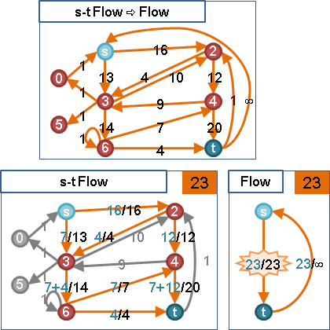
可行循環流化作最大源匯流。新增源點與匯點，源點接至supply，容量上限為供水量；demand接至匯點，容量上限為需水量。然後嘗試求最大源匯流，若源點管線與匯點管線皆滿溢，則有可行循環流，反之則無。拆除新增管線，最大源匯流就變成可行循環流。
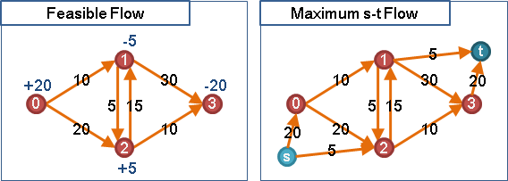
總結
流的問題總是可以簡化成：有容量上限、無容量下限、成本非負、有向邊，許多supply和demand。
無論流動方式是循環流、源匯流，無論最佳化目標是最大流、最小流、可行流，都可以歸約成Minimum Cost Maximum s-t Flow。
UVa 11647 1259 ICPC 3787 4722 5131
Feasible Flow
「可行流」。符合供需水量、容量上下限的流。
直覺的方式，就是歸約。進階的方式，就是瞭解歸約過程之後，直接以原圖實施計算，不歸約、不改圖。
承襲Maximum s-t Flow演算法，額外考慮flow、supply、demand等新概念。
不斷尋找起點為supply、終點為demand的擴充路徑，進行擴充後就根據水量減損supply、增益demand，直到圖上沒有supply與demand為止。
Maximum Flow
「最大流」。流量最大的可行流。
一、首先隨便找出一個可行流，然後不斷找擴充環。
根據最大流最小割定理，剩餘網路沒有擴充環，即是最大流。
二、窮舉所有兩點之間容量s-t割，取最小值。【尚待確認】
Minimum Flow
「最小流」。流量最小的可行流。
一、堅持使用擴充路徑而不是擴充走道，即得最小流。【尚待確認】
二、首先隨便找出一個可行流，然後不斷消去擴充環。【尚待確認】
我找不到任何有關最小流的正確性證明！
Minimum Cost Flow
「最小成本流」。成本最小的可行流。
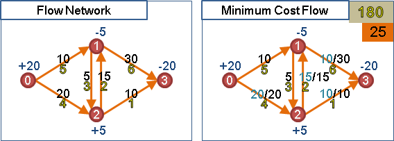
承襲Minimum Cost Maximum s-t Flow演算法。
Cycle Canceling Algorithm：先找到任意一個可行流，再以負成本環進行擴充。
Successive Shortest Path Algorithm與Primal-Dual Algorithm：不斷尋找起點為excess、終點為deflict、成本最小的擴充路徑，直到所有excess與deflict成為零。如果excess與deflict沒有同時成為零，則沒有可行流。
Excess / Deficit
「餘水點」水量超出平衡，「缺水點」水量低於平衡。當圖上有excess與deficit，表示流量不平衡，不是可行流。
餘缺水量 = 當前流入水量 - 當前流出水量 + 供需水量
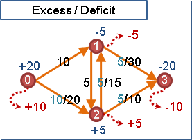